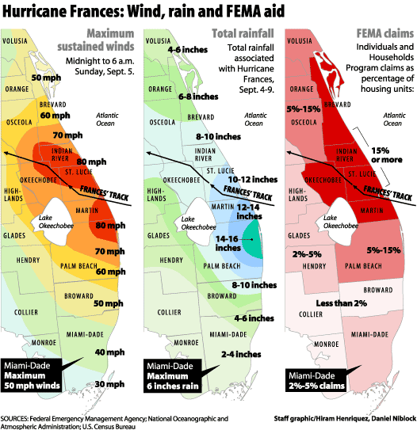

- Title Page
- Introduction
- Investigative Reporting at the Sun-Sentinel
- Storms Galore
- The Federal Emergency Management Agency
- Raising Questions
- Going to Print
- Waiting for Records
- Into the Neighborhoods
- A Morning Meeting
- The Next Story
- Inspectors
- The Data Arrives
- Results and Sources
- Criminals
- Putting the Pieces Together
- Nationwide?
Going to Print
By the time Demma arrived for his first day of work on Monday, October 4, the Sun-Sentinel team was deeply immersed in its FEMA investigation. Kestin had kept him informed of their progress by email, but as she updated him in person, he realized the team had gathered more than enough material to publish. He encouraged the reporters to pull the story together for the Sunday, October 10 edition of the paper.
Kestin and O’Matz wrote feverishly the week of October 4. They double-checked facts and asked themselves what they might have overlooked. Though the story focused on possible fraud in local disaster relief, the involvement of a federal agency gave the story a national component as well. As O’Matz and Kestin put the finishing touches on the piece for their Friday deadline, O’Matz contacted FEMA’s national office to ask why the agency had approved so much money for Miami-Dade County. FEMA spokesman Jesse Seigal assured her that approved claims were legitimate, but was unprepared for her detailed questions and could not reconcile the amount of approved aid to the county with the evidence she presented about windspeeds, rainfall, and damage. “We just pay the claims that come in and are eligible,” he insisted. “I don’t know that we track where this is going.” He continued:
If [the claims have] been paid, they’re legitimate... There’s a lot of different factors involved—cost of the property, maybe more of the folks are getting the maximum allowable than some of these others, but there is no way to tell just looking at these figures.[22]
© Sun-Sentinel 2004On Sunday, October 10, 2004, the reporting Kestin, O’Matz, and Maines had done hit the front page in a story titled “Amount of hurricane disaster aid to Miami-Dade County, Fla., raises questions.” It was three weeks since Maines had first noticed the anomaly in the FEMA map, and only six days since Demma had joined the Sun-Sentinel. Kestin and O’Matz wrote the story straight. They contrasted FEMA’s approval of millions of dollars’ worth of disaster aid to Miami-Dade with the evidence they had collected that Hurricane Frances had bypassed the county. Database Editor Maines remarks: “All [the story] really did was say ‘all this money went to Miami-Dade and what happened?’ We couldn’t answer the question.”
Footnotes
[22] Sally Kestin and Megan O'Matz, "Amount of hurricane disaster aid to Miami-Dade County, Fla., raises questions."